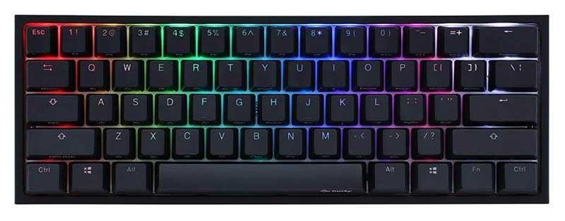

PASOS PARA REALIZAR EL MANTENIMIENTO DEL CPU
Paso 1:iniciamoos desconectando el cpu de los cables de energia. Proseguimos a ponernos los guantes o pulseras estaticas
Paso 2:destornillamos los tornillos que sujetan las tapas laterales del case o gabinete, sacamos las tapas laterales
Paso 3:desconectamos los cables de la placa madre y los ventiladores, salimos a limpiar con el soplador
Paso 4:volvemos al lugar de limpieza para sacar la fuente de poder y poder limpiarla
Paso 5:desconectamos los cables que unen al ventilador y la fuente de poder, sacamos el ventilador de la fuente de poder y volvemos a salir para limpiar con el soplador
Paso 6:proseguimos a limpiar el ventilador con los cotenetes y el alcohol isopropilico despues pasamos la franela por el ventilador. limpiamos la fuente de poder por fuera, luego volvemos armar la fuente de poder y la volvemos a poner al case o gabinete
Paso 7:destornillamos el ventilador auxiliar y procedemos con la limpieza del mismo,salimos a pasarlo con el ventilador para sacar el polvo
Paso 8:volvemos para limpiar el ventilador auxiliar con los cotonetes y el alcohol isopropilico. para saber si esta bien realizado la limpieza giramos las aspas del ventilador, si este no gira facilmente y hace ruido desarmamos el ventilador auxiliar ponemos aceite de maquina para que gire facilmente, lo volvemos armar y lo pasamos con la franela
Paso 9:volvemos a poner el ventilador auxiliar al case o gabinete
Paso 10:conectamos los cables a la placa madre
Paso 11:limpiamos las tapas laterales de case o gabinete
Paso 12:armamos el case o gabinete poniendo la tapas laterales.
Paso 13:conectamos el case o gabinete con los cables de energia y prendemos el monitor para ver que el case o gabinete funcione correctamente
PASOS PARA LIMPIAR EL TECLADO, MOUSE Y MONITOR
Paso 1:desconectamos el cable que une el teclado al case
Paso 2:volcamos el teclado y damos unos pequeños golpes al teclado para quitar el polvo
Paso 3:salimos y en diagonal pasamos el soplador por el teclado
Paso 4:sacamos las teclas con un destornillador plano formando una palanca y limpiamos las mismas con cotonete y alcohol isopropilico(tener cuidado al limpiar el lugar de donde sacamos las teclas, tratar de no tocar el espacio blanco del medio con el cotonete)
Paso 5:volvemos a colocar en su lugar cada una de las teclas
Paso 6:despues limpiamos con la franela alrededor, volvemos a conectar el teclado con el case o gabinete
Paso 7:para limpiar el mouse desconectamos el mouse y con la franela y alcohol isopropilico lo pasamos por el mouse
Paso 8:para limpiar el monitor apagamos la pantalla y con la franela especial y limpiador de pantallas limpiamos el monitor solo de forma horizontal o vertical no asi de forma circular
